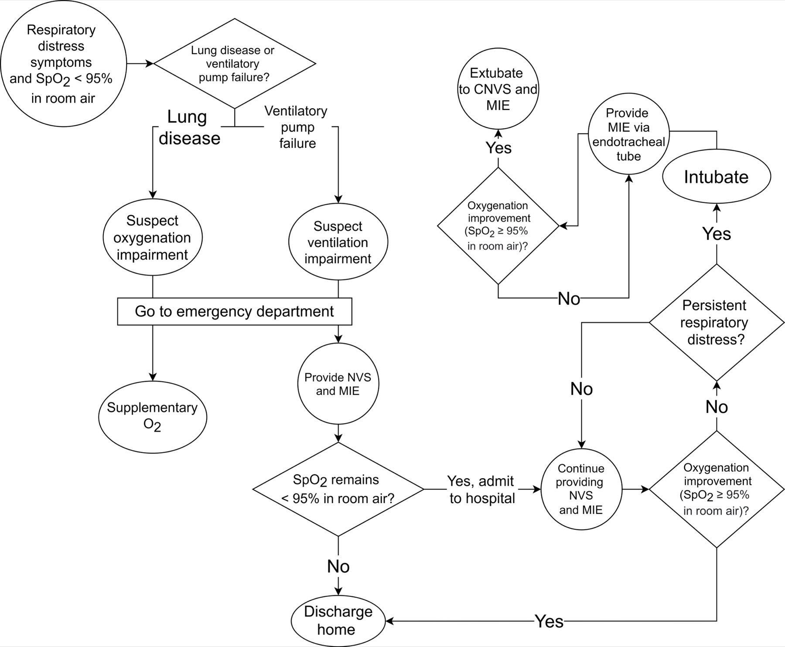

Erro comum desmontado
Bomba-relógio e a crise
Piorou a fraqueza — já é crise? Crise não é qualquer piora: crise é quando falta ar, não só quando falta força.
Bomba-relógio e gatilhos
Paciente com MG deve ser tratado como bomba-relógio prestes a explodir: qualquer quebra de homeostase pode piorar a doença.
Gatilhos de piora: infecção, distúrbio metabólico, doença vascular aguda, medicamento novo introduzido — entre outras mudanças de homeostase.
Piora leve ≠ crise
A maioria das pioras é leve: ajusta-se piridostigmina, corticoide, imunobiológico e o paciente estabiliza. Existe o risco da crise miastênica — forma mais grave de piora.
Crise = IR
Crise miastênica, por definição: piora com insuficiência respiratória — perde a capacidade de ventilar corretamente. Fraqueza pior sem falência respiratória não recebe o rótulo de crise.
Bordão: Crise é quando falta ar, não só quando falta força.

Mahleretto, via Wikimedia Commons. Licensed under CC BY-SA 4.0. Source: commons:NVS_and_MIE_acute_management.jpg

Crise = IR
O ramo que o olho do aluno tem que fixar: "Ventilatory pump failure" → Provide NVS and MIE. Não o braço "Lung disease → Supplementary O₂" (que é falha de oxigenação, não da bomba neuromuscular da crise miastênica).
IVIG ou plasmaférese
Tratamento da crise: imunoglobulina (IVIG) ou plasmaférese. Conduta geral: retirar o que está atrapalhando/descompensando e "pancada" com IVIG ou plasmaférese.
Gatilhos & condutas
Trap — crise = insuficiência respiratória
Sem falência ventilatória, o rótulo "crise" não se aplica. "Piorou a ptose" é piora leve — ajuste de base, não crise. "Falta de ar com fadiga de musculatura acessória" é crise.
Trap card: termômetro "força piora" vs linha vermelha "IR = crise".
Quiz
Q1. Crise miastênica, por definição, exige:
Gabarito: B. Sem falência ventilatória, o rótulo crise não se aplica — mesmo com fraqueza pior.
Q2. Tratamento da crise (eixo terapêutico):
Gabarito: B. IVIG ou plasmaférese — o tratamento da crise.
Q3. Infecção em paciente com MG:
Gabarito: B. Infecção = gatilho clássico de piora. O paciente com MG é bomba-relógio.